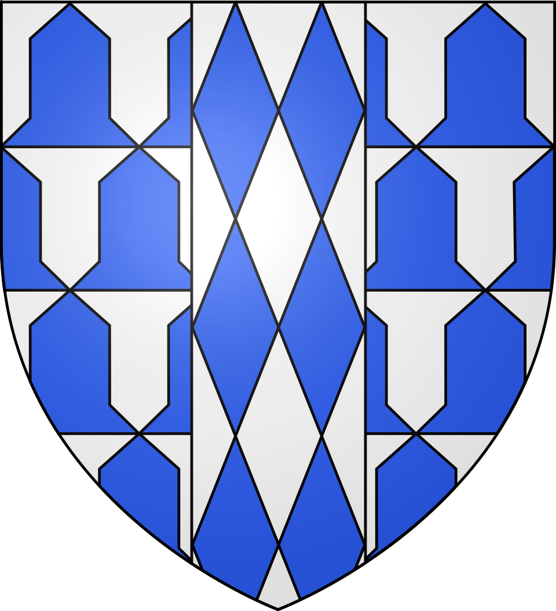
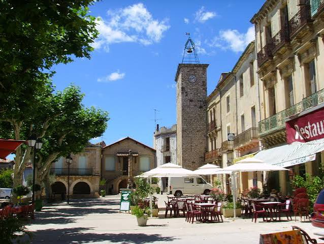

Saint-Jean-de-FosLe village aux reflets vernissés,
aux portes des gorges de l’Hérault


⟹ Villages & Patrimoine ⟸

À l'entrée des gorges de l'Hérault, Saint-Jean-de-Fos s'est développé au Moyen Âge autour de l'église Saint-Jean-Baptiste. Son plan de ruelles resserrées, ses vestiges de remparts et sa tour de l'Horloge rappellent le caractère autrefois fortifié de ce village établi sur un axe de passage majeur entre la plaine languedocienne et les reliefs de l'arrière-pays.

La construction du pont du Diable au début du XIe siècle, entre les abbayes d'Aniane et de Gellone, favorise les échanges et les déplacements. À proximité immédiate de cet ouvrage, Saint-Jean-de-Fos profite du passage des voyageurs, marchands et pèlerins qui gagnent Saint-Guilhem-le-Désert et les routes du Larzac.
À partir du XVe siècle, l'argile locale donne naissance à une activité qui va profondément marquer le village : la poterie. Les artisans produisent vaisselle, tuiles, gouttières, chenaux, canalisations et éléments décoratifs. La terre vernissée devient peu à peu la signature de Saint-Jean-de-Fos, visible jusque sur les façades et les toitures.
Au XIXe siècle, cette activité connaît un remarquable essor. Aujourd'hui encore, des potiers et céramistes perpétuent ce savoir-faire vieux de plus de six siècles. Argileum, installé dans un ancien atelier de potier du XIXe siècle, permet de découvrir cette histoire artisanale et les gestes de la céramique.
La poterie de Saint-Jean-de-Fos est historiquement une production à la fois utilitaire et architecturale. Tuiles, chenaux, gouttières, canalisations, vaisselle et décors vernissés témoignent d'une adaptation constante aux besoins de la vie quotidienne.
À Saint-Jean-de-Fos, la terre vernissée ne se contente pas d'être exposée : elle habille encore les maisons et raconte l'histoire du village.
— Synthèse patrimonialeLes ateliers contemporains prolongent aujourd'hui cette tradition en l'ouvrant à la création artistique, au grès, à la porcelaine et à de nouvelles formes de céramique.
Saint-Guilhem-le-Désert et l'abbaye de Gellone, au cœur des gorges de l'Hérault.
Grotte de Clamouse, remarquable univers souterrain à proximité immédiate.
Aniane, ancienne cité monastique liée à l'histoire du pont du Diable.
Gignac, bourg historique et viticole de la vallée de l'Hérault.